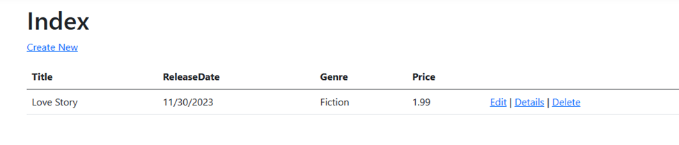
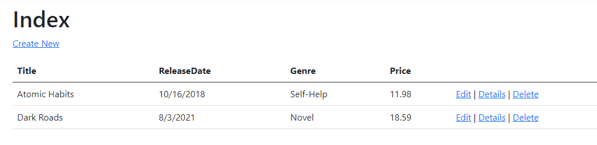

Nội dung bài học
Trong bài về Model chúng ta đã đề cập đến vai trò của EF Core cho phép chúng ta ánh xạ giữa các lớp từ mã chương trình và các bảng trong cơ sở dữ liệu giúp cho việc viết mã truy cập dữ liệu dễ dàng hơn. Cụ thể, trong dự án MVCBooks, lớp MVCBooksContext trong tập tin Data / MVCBooksContext.cs làm nhiệm vụ kết nối cơ sở dữ liệu và ánh xạ các đối tượng (entity) đến các bản ghi (hàng) của cơ sở dữ liệu. Cũng cần nhắc lại rằng, ASP.NET Core được xây dựng dựa trên Dependency Injection (DI) nên MVCBooksContext phải đăng ký DI trong phương thức ConfigureServices trong tập tin Program.cs trước khi được sử dụng
Chúng ta cũng đã tạo cơ sở dữ liệu dùng Migrations và đây là phiên bản cục bộ LocalDB của SQL Server Express Database Engine. Chuỗi kết nối (Connection String) đối với cơ sở dữ liệu được khai báo với tham số ConnectionStrings trong tập tin appsettings.json. (Xem bài Thêm Model)
Tạo lớp SeedData trong thư mục Models và thay mã sau:
Tập tin Program.cs được viết lại như sau:
Thực thi ứng dụng https://localhost:7258/Books (chú ý cổng 7258 sẽ khác nhau phụ thuộc vào máy cá nhân)
Nhấn link Delete để xóa hàng đã tồn tại sẵn trước đó. Đóng trình duyệt và thực thi lại
Như vậy chúng ta đã hoàn thành việc cập nhật dữ liệu mới cho ứng dụng.